Snipe-IT资产管理系统帮助文档
资产标签
资产标签是系统中资产的唯一标识符。每个标签必须唯一，并且通常与资产标签一起使用。它们标识每个唯一的硬件，以便您知道它是哪个特定设备。
对于不需要资产标签的用户，通常将每个设备的唯一序列号用作资产标签，或者您可以在管理>设置中打开自动递增资产标签，这将在您生成资产时自动为您生成唯一资产标签。您创建新资产。
签入/签出
签入和签出是资产管理系统中的两个主要概念。签出资产，许可证或附件时，就是将其标记为他人拥有。这意味着在随后将它们再次签入之前，无法将它们签出给其他人。这可以防止“双重预订”资产，在这种资产中，一项资产已被承诺或分配给多个人。
当员工离开公司时，或者资产，许可证或附件无法正常运行时，您将其重新签入。重新签入表明它已归您所有，或者有可能需要维修。您可以根据资产的状况决定要分配的状态。
状态标签
状态标签用于描述资产的状态。您可以根据需要添加任意数量的状态标签。每个状态标签将具有以下四个特征之一，这些特征描述具有该状态标签的资产状态：
| 状态标签类型 | 描述 |
|---|---|
| 不可部署 | 这些资产不能分配给任何人。 |
| 可部署 | 这些资产可以分配给人员 |
| 已封存 | 这些资产无法分配给人员，只会显示在“存档”视图中 |
| 待定 | 这些资产尚未分配给任何人。 |
使用状态标签，但您认为合适。您可以只保留我们为您设置的入门标签，也可以充实一组详细的状态，以确保您的团队始终准确了解每种资产的状况。
如果您设置好状态标签，它们将非常有用。状态标签是一个名为“ Awaiting Re-Imaging”的待处理标签，它告诉您的团队该项目无法部署，因为它仍处于重新成像阶段且尚未准备就绪。准备就绪后，您的团队可以将状态更新为“准备部署”，然后将其添加到可用的可部署资源池中。
一旦将属于“可部署”状态的资产分配给用户，则该资产将呈现“已部署”的元状态。
列选择
在资产管理系统的大多数基于表的界面中，您可以选择显示或隐藏特定的列，以便您不太在意的列不会占用屏幕空间，而您关心的列大约很容易看到。
要使用此功能，只需单击表界面右上角看起来像拆分窗格窗口的图标。选中和取消选中列名旁边的复选标记将相应地显示和隐藏列。
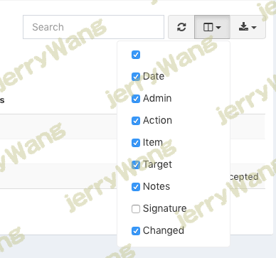
管理员设定
您的管理员设置仅对超级管理员可用，它们可以控制诸如商标，颜色，徽标，警报阈值，密码安全性等设置。
要访问管理员设置，请点击右上角导航栏中的齿轮图标。
资产模型
每个资产都需要一个资产模型，因此接下来进行设置将有助于您开始添加资产。资产模型可以是笔记本电脑或台式机的品牌和型号（例如，Apple 13” Retina）。创建新资产时，将选择最合适的资产模型。
资产模型之所以重要，是因为它们具有资产所继承的某些属性，例如折旧类型，寿命终止以及是否在资产上显示MAC地址字段。
可以将单个资产标记为可请求，也可以将资产模型标记为可请求，这使资产管理系统中的用户可以请求特定资产或与他们所需的资产模型匹配的任何资产。
分类目录
资产和附件都使用类别。类别描述资产或附件的一般类型，例如“无线键盘”，“笔记本电脑”等。
类别很重要，因为它们包含资产和属于它们的附件所继承的属性，例如是否已将项目签出给终端用户，是否向最终用户发送电子邮件，是否要求用户单击链接证明他们已经收到资产或附件，以及是否应该向用户发送电子邮件EULA。
每个资产和附件都必须属于一个类别，因此您需要在添加资产之前进行设置。
要开始创建新的齿轮，请单击屏幕左侧的齿轮图标：
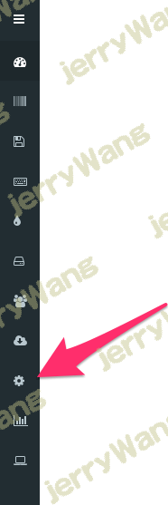
单击齿轮图标以打开设置，然后单击类别以进入主要的类别部分：
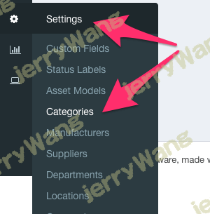
然后创建新的类别，在创建资产时需要选择该类别。
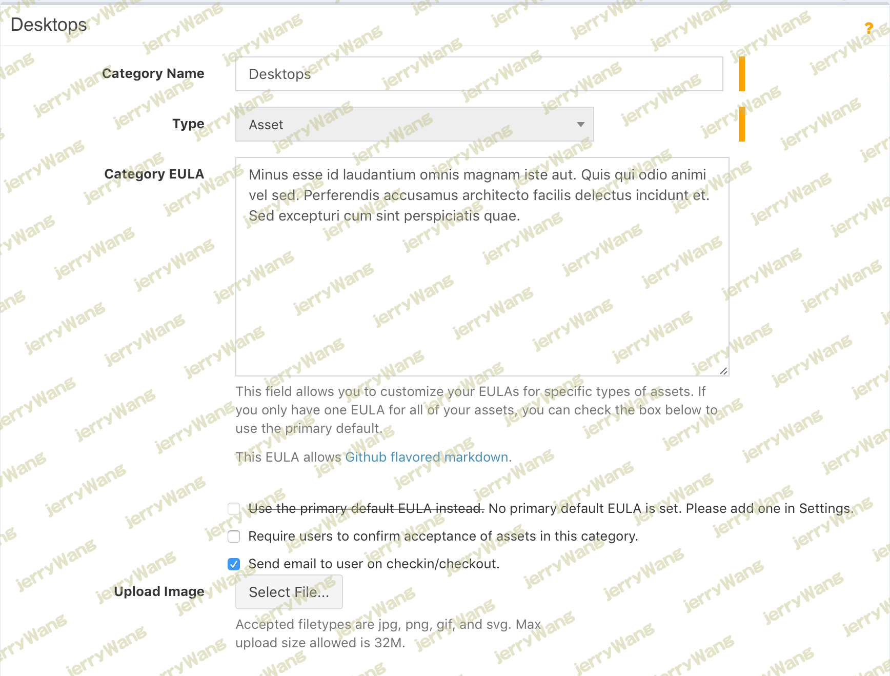
另外，如果您通过CSV导入，则可以即时创建类别。
管理用户
要在您的资产管理系统系统中管理用户，只需单击“人”链接。我们建议使用权限组（在“管理”>“组”中）来处理用户权限，这样，可以轻松地将添加到该行下的所有其他细化权限应用于所有适当的用户，而无需一个个地对其进行编辑。
对于许多组织来说，常见的设置是让少数几个Superadmin或Admin用户进行组织的签入和签出，并且所有其他用户的创建没有任何特殊权限。没有任何管理权限创建的用户将只能查看签出给他们的项目或他们所请求的项目。
管理资产
自定义字段
通过自定义字段，您可以跟踪有关默认资产属性未涵盖的资产的其他信息。
请查看下面的简短视频教程，以获取完整的演练：
将自定义字段集视为自定义字段的集合。您可以有一个仅包含一个自定义字段或多个自定义字段的自定义字段集。字段集的想法是将常用字段分组在一起，这样您就不必在资产模型中一个接一个地添加字段。
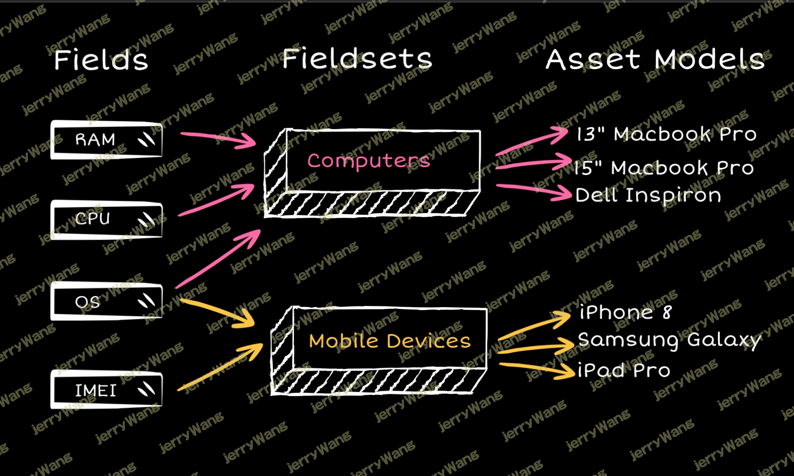
自定义字段集在资产模型级别分配。因此，例如，如果您将移动电话作为资产进行跟踪，则可以为“ IMEI”，“ SIM”，“电话号码”等创建自定义字段。
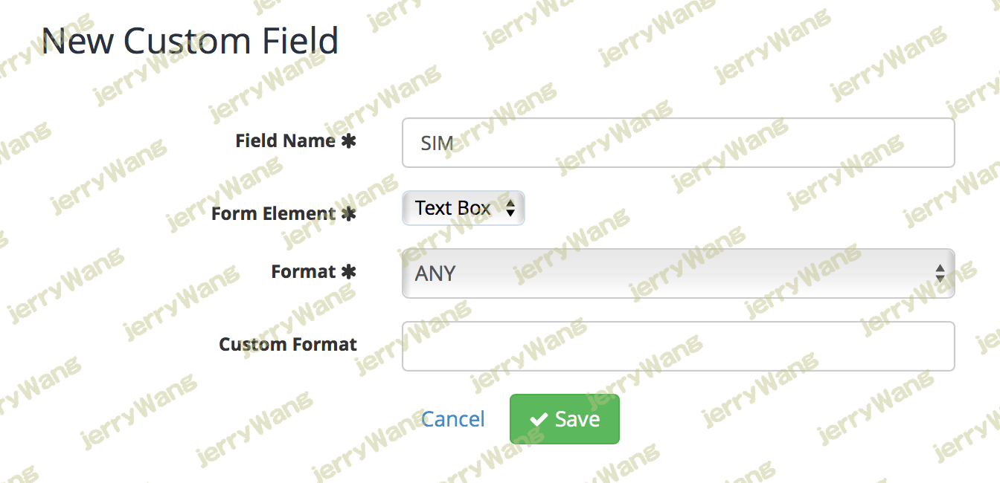
新的自定义字段
然后，您需要将所有与手机相关的字段添加到新的“手机”自定义字段集中，并将其分配给您的手机资产模型之一。
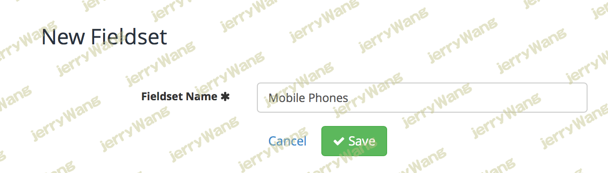
手机领域
将字段添加到字段集中时，可以选择是否需要该字段，字段应以什么顺序显示，然后从选择框中选择要添加的字段集。
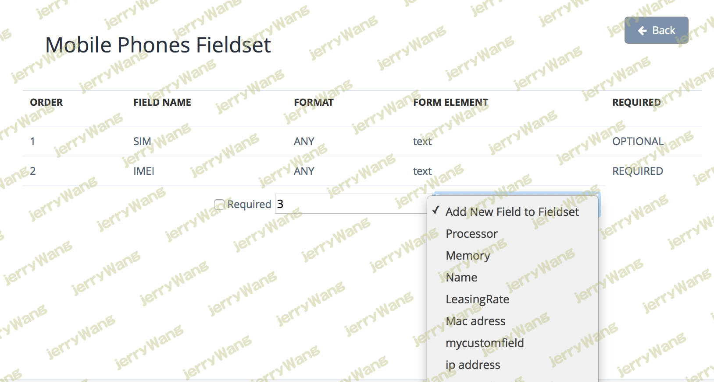
然后，对于您创建的属于该资产模型的任何手机资产，自定义字段属性将自动出现。
要逐步将其分解：
- 在自定义字段集中创建所需的新自定义字段。
- 创建新的自定义字段集，并添加刚创建的自定义字段。
- 转到管理>资产模型，然后编辑资产模型，选择刚创建的自定义字段集。
您可以先创建字段，也可以先创建字段集，但是请确保将新字段添加到您的字段集中，然后将该字段集与资产模型相关联以在资产表单上查看这些新字段。
一旦您的资产模型具有与之关联的自定义字段集，您的新值将显示在资产视图和编辑页面上以及主资产列表中。您将可以在这些字段中进行搜索/排序（以及在表视图中显示/隐藏它们），就像在其他内置字段中一样。
自定义字段验证
我们为您创建的自定义字段上的基本输入验证提供了支持。创建字段时，您可以选择在管理员添加或编辑资产时应在其中输入新字段的文本输入。您有几个预定义的选项：Format
| 格式 | 描述 |
|---|---|
ANY | 没有输入验证。任何文字都是可以接受的。 |
ALPHA | 验证中的字段必须完全是字母字符。 |
ALPHA-DASH | 验证中的字段可能包含字母数字字符以及破折号和下划线。 |
NUMERIC | 验证下的字段必须为数字。 |
ALPHA-NUMERIC | 验证中的字段必须完全是字母数字字符。 |
EMAIL | 验证下的字段必须格式化为电子邮件地址。 |
DATE | 根据PHP函数，验证中的字段必须为有效日期。strtotime |
URL | 验证下的字段必须是有效的URL。 |
IP | 验证下的字段必须是IP地址。 |
IPV4 | 验证中的字段必须是IPv4地址。 |
IPV6 | 验证中的字段必须是IPv6地址。 |
MAC | 验证中的字段必须是有效的MAC地址。 |
BOOLEAN | 验证中的字段必须能够转换为布尔值。接受的输入为true，false，1、0，“ 1”和“ 0”。 |
CUSTOM | 该字段允许您使用正则表达式进行验证。它应以-开头，例如，要验证自定义字段值包含有效的IMEI（15个数字），请使用。regex:``regex:/^[0-9]{15}$/ |
通用自定义字段正则表达式
多个Mac地址： regex:/^([0-9a-fA-F]{2}[:-]){5}[0-9a-fA-F]{2}|([0-9a-fA-F]{2}[:-]){5}[0-9a-fA-F]{2}(,([0-9a-fA-F]{2}[:-]){5}[0-9a-fA-F]{2})*/
资产验收
如果资产所属的资产模型属于要求接受资产的类别的一部分，则会向用户发送一封电子邮件，提示他们登录并单击链接以确认他们已收到设备。
物理签名
从版本3.6.0开始，您可以要求资产带有资产接受/拒绝的物理签名。启用此功能后，系统将在屏幕上提示用户，提示他们可以在任何启用触摸的设备上用鼠标或手指签名自己的名字。
要启用此功能，只需在管理>设置中将其打开即可。
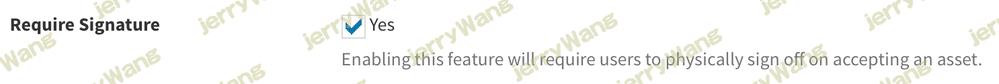
🚧重要
请记住，您必须在类别级别启用接受要求，以便用户实际接收要求他们接受资产的电子邮件。这为更广泛的资产类型提供了更详细的接受选项。
查看签名
要查看验收签名，只需转到资产的“历史记录”标签。（您可能需要使用列选择器显示该列。）
一旦可见，资产历史记录选项卡将显示已签名接受资产的所有用户的签名。
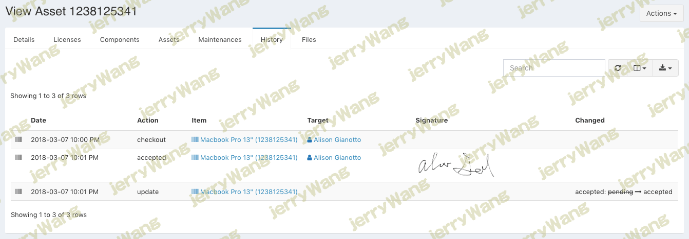
单击签名将显示较大的版本。
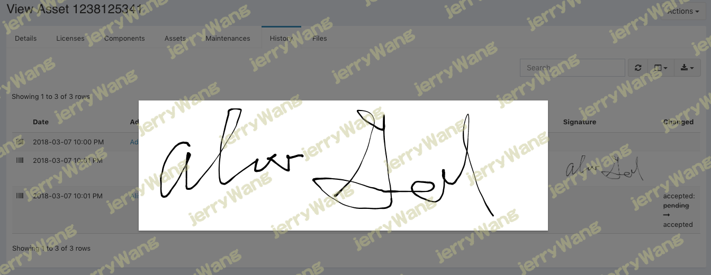
签名文件存储在中。storage/private_uploads/signatures
可请求资产
资产管理系统具有允许用户轻松请求资产的功能。
可以将单个资产标记为可请求，也可以将资产模型标记为可请求，这使资产管理系统中的用户可以请求特定资产或与他们所需的资产模型匹配的任何资产。
您可以通过在“资产”部分的sidenav中选择“请求的资产”选项来管理用户请求的资产。
 微信
微信 支付宝
支付宝